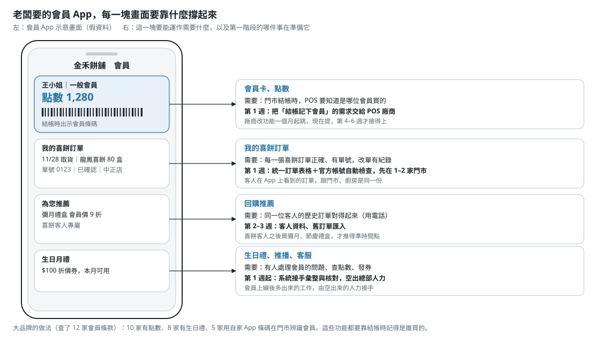

喜餅訂單：先把訂單管好，再往會員走
6 家門市＋1 個中央廚房。門市照舊接電話、記 Excel、傳 LINE；中央廚房的官方帳號在群組裡自動檢查、彙整、回覆。這一步解決眼前的退款，也是會員系統的底。
- ← → 鍵或點按鈕換頁
- 列印成 PDF：瀏覽器列印即可，一頁一張
Jack Tsai｜2026-10
老闆要的，和現場看到的，是兩個題目
老闆說
「我們想要一個會員 App，跟大品牌一樣。」
目的、要看的指標、誰來推，都還沒問清楚。
現場看到
- 喜餅約占營收四成
- 上一季 3 筆喜餅訂單日期或數量記錯：退款＋負評
- 中央廚房要等各店把 Excel 用 LINE 傳來，才知道下週做多少
- POS 外包，只能每晚匯出 CSV，改功能一個月起跳
判斷
會員不只是資料的問題，要先弄清楚會員 App 對老闆代表什麼：是品牌聲量和面子？是營收、獲利？還是觸及更多客人？我的判斷是：沒有進一步討論，特別是跟這家糕餅連鎖的行銷人員談過之前，這還不是一個清楚、值得去追的目標。
老闆的回覆
「我一開始就說得很清楚，我們想要的是跟大品牌一樣的會員 App。門市那幾筆喜餅訂單記錯，純粹是員工自己粗心，我交代大家看仔細一點就好。你說要先改門市用 Excel 的那些事，為什麼我要花錢去弄那個？對我有什麼好處？」
我們怎麼讀這段話
- 會員 App 是老闆想像出來的成品；他要的是背後的價值：客人回來買、知道客人是誰、跟大品牌站在一起。這是這件事的驅動力
- 他問的是「對我有什麼好處」，不是反對打底；缺的是基礎工作怎麼走到 App 的那條線
- 「交代大家看仔細」今天做得到；會員上線後，單量和要處理的事變多，同一批人還要顧會員
調整
- 一頁說明先拆出會員 App 的價值，再講現在的 PoC 怎麼一步步撐起這些價值；不再追問，直接用大品牌的做法推出要哪些功能
- 用 App 的畫面倒推：每一塊需要什麼、第一階段哪件事在準備它（下一頁）
- 訂單系統定位成會員 App 的第一階段：先空出人力、先把資料打好，會員上線後的新工作才接得住
- 第 6 週把會員 App 試用版拿給老闆和同仁試
從會員 App 倒推回第一週

核心問題
從現場的問題著手，是部署這套解法的第一步：人和電腦一起工作，軟體圍繞著人建一套系統，讓人做事更有效率。
訂單從門市到廚房這一段，沒有人或系統在檢查，也沒有一份大家都信得過的總數。
- 每家門市的 Excel 格式不同，改單只是改掉一格，廚房不知道哪張單在什麼時間被誰改過
- 錯誤要到客人取貨才被發現
- 總部有人在人工合併各店 Excel（假設），漏算、重複算，也花工時
有一部分不是軟體問題
如果錯在電話裡就聽錯（客人說 15 號、店員寫成 16 號），表格擋不住。軟體能讓錯變少，人還是會出錯，所以流程（掛電話前覆誦、用 LINE 傳確認給客人）和系統要一起設計。上一季那 3 筆錯在哪一步，是第一週要追的第一件事。
關鍵假設（都還沒跟客戶確認）
| # | 假設 | 如果不成立 |
|---|---|---|
| A1 | 門市已經用 LINE 群組把 Excel 傳給廚房 | 群組設計重談 |
| A2 | 3 筆事故錯在門市記錄或改單 | 檢查重點移到別的環節；錯在電話就先改流程 |
| A3 | 門市能接受統一範本，不能接受新系統 | 能接受的話，可以考慮表單輸入 |
| A4 | 廚房彙總依接單門市分列，送到哪家店照廚房現有流程 | 跨店取貨多，範本才加「取貨門市」欄 |
| A5 | 現有群組裡沒有別的 bot（一個群組只能有一個） | 每店另開「門市＋官方帳號」群組 |
| A6 | 每月喜餅訂單數十到一百多筆 | 重看託管規格、審核人力、LINE 方案 |
| A7 | 總部有人專門彙整各店 Excel 再交給廚房 | 主指標改看廚房拿到數量的時間點 |
| A8 | 我們這邊能提供足夠的人力，包括需求溝通和開發 | 依可投入的人力重排優先順序：先做第一週交付，再往會員推 |
這些問題已用 email 提出；沒有回覆也照假設往下做，答案會對到「如果答案是 X，我會改 Y」。
現況流程

設計原則：順著現場的習慣
門市只改兩件事
- 改用統一範本，每張單一定要有單號（沿用或印一本預先編號的訂購單）
- 照樣把 Excel 傳到原本的群組，只是群組裡多了中央廚房的官方帳號
門市人員多半做了十幾二十年，從紙筆走到 Excel 已經花了很久。不叫她們學新系統、不開帳號、不填表單。
系統這一側
- 處理流程不用 AI：範本一致，就用確定的規則解析、檢查、合併，每一筆都能追溯
- 每次上傳可以放新的訂單，也可以放更改過的訂單
- 每一份範本檔都一定有回覆；沒收到回覆，本身就是出事的訊號
導入後流程

MVP
- 群組收檔與回覆：驗證 LINE 簽章、事件去重、收到就下載；只回應範本檔，回覆寫明收到幾張、第幾列有什麼錯
- 逐列檢查：缺單號、日期讀不出、盒數不對、品項不在清單裡；民國年、
10/25、欄位順序不同、多加的欄位、多個分頁都讀得懂 - 修改自動分類：追加、減量、改取貨日、取消、資料更正、疑似單號重複使用；每一筆修改留紀錄
- 修改截止點：取貨日前 7 天（可調）之後的改單轉「待確認」，總部確認或退回，結果附在門市下一次回覆
- 網頁：總表、廚房彙總（取貨日 × 品項 × 接單門市）、待處理、客人資料，每頁都能下載 Excel；依角色登入，門市沒有帳號
- 客人資料：電話正規化後當客人 ID；跟會員分開
- 歷史資料匯入：舊格式 Excel 轉成範本，建立回頭客名單
- 部署：Cloud Run（台灣）＋Neon，LINE 群組實測通過；一行指令重播 9 步 demo，一行指令重新部署
| 自動化測試 | 涵蓋什麼 |
|---|---|
| 功能面 | 六家門市的模擬檔逐份跑過，收了什麼、退了哪一列、回覆怎麼寫都對照預期；修改分類與截止點邊界（剛好第 N 天）；退回後重傳不重複產生待確認；廚房彙總的加總（含取消與待確認）；電話正規化；舊格式轉換與歷史匯入；門市綁定；LINE 回覆和模擬上傳頁逐字相同 |
| 非功能面 | 安全：簽章錯誤拒收、各角色只看得到該看的頁、未登入看不到任何訂單或客人資料、log 不出現姓名電話。可靠：LINE 重送只處理一次、原檔與修改紀錄在資料庫層禁止改寫、下載或處理失敗也回覆並保留原檔、回覆不超過 LINE 字數上限。部署：資料庫連線一定走 TLS、secret 不印出、先 migration 再上線。測試跑在真的 Postgres 上 |
先在 1–2 家門市試行。第一週要緊密跟進：流程裡有沒有預料外的情況，現場的人怎麼接受新做法。導入要花多少時間、門市適應的成本、跟現有系統整合的成本，都是這個 MVP 要一起評估的。
Out of Scope
| 不做 | 原因 |
|---|---|
| 讓門市改用表單或 App 輸入 | 對資深店員是新的出錯來源；第一階段只換範本 |
| 第一週就做會員 App | 目的、指標還沒問清楚；資料還散著；排在第 4–6 週，第 6 週再決定要不要 App |
| POS 對帳 | 現在的 CSV 分不出喜餅取貨和現場購買；第一週先向廠商提出另開品項 |
| 取貨、配送、跨店、宅配 | 照廚房現有流程；系統只回報接單門市 |
| AI 解析 | 同樣的輸入要得到同樣的結果，每一筆都能追溯 |
| 用電話猜是哪一張單 | 猜錯正好造成要解決的那種錯；單號必填，靠編號訂購單補 |
技術選型：自建，還是用現成工具
| 類型 | 做得到什麼 | 限制 |
|---|---|---|
| 現成會員系統 Mobile.Cards、Ocard | 一站式：品牌 App 或 LINE 會員卡、點數、會員分級、生日禮自動發送、推播；可加購 POS 串接 | 功能是套裝的，彈性小；喜餅訂單、門市 Excel、改單與截止點這段流程不在範圍內；POS 串接仍要外包廠商配合；價格都要洽詢 |
| No-code 工具 Ragic、Google Sheets、Airtable | 表單、資料表、Excel 匯入、簡單自動化；費用約每人每月 0–24 美元 | 業務規則（修改分類、截止點、待確認）還是要自己想清楚、自己搭；接 LINE 群組收檔仍要寫程式 |
| 換成烘焙 POS WiXtar | POS 內建會員，也有喜餅接單轉工廠的功能 | 等於換掉現在的 POS，是大決策；價格未公開 |
| 自建 | 要做哪些功能、接哪些系統，由我們決定；可以先做訂單，再接會員和 POS | 要有人維護；全部資料隨時能下載 Excel，不會被綁住 |
結論：自建。彈性最大：要做什麼功能、要做哪些整合，都能依現場和行銷的需要決定，不受套裝功能限制。
技術組合（Python＋Postgres、Cloud Run＋Neon）是初期 PoC 最快、最便宜的選擇，目前在免費額度內。等客人數量和會員規模清楚了，再看要不要擴充或調整架構。
錢要花在刀口上：怎麼證明有價值
先處理隱藏的風險
目前的做法是交代大家看仔細。上一季 3 筆喜餅訂單記錯，每一筆都是退款加負評。會員上線後訂單和要處理的事都會變多，同樣的出錯機率會變成更多筆錯單，錯的還是會員的資料。第一週把這個風險的成本算出來：3 筆的退款金額、處理客訴的時間、負評，以及現在人工整理和核對訂單的工時。
成功指標
- 內部營運：節省的人工工時，系統上線前後比較。省下來的時間，留給會員上線後的新工作
- 外部成果（與行銷團隊一起定）：會員人數、會員消費金額、因精準行銷而下單的會員數
停下來的訊號
- 訂單錯誤變多
- 員工抱怨新流程，或效率變差
第 1 週
| 做什麼 | 內容 |
|---|---|
| 會員 App 第一版雛形 | 與老闆、行銷同仁洽談後的報告：對照大品牌的點數、生日禮、回購推薦，列出第一版要有的功能，以及之後怎麼推動會員系統 |
| 現行流程工時與風險成本報告 | 訪談總部負責彙整 Excel 的同仁、廚房、試用門市店長：現在花多少工時、來回溝通的成本、上一季 3 筆的退款與客訴成本。作為之後比較的基準 |
| 統一訂單表格，1–2 家門市試行 | 統一範本、編號訂購單、官方帳號進群組、總表與廚房彙總。門市照舊記 Excel、傳 LINE，不用裝軟體；新舊做法並行，每天跟進預料外的情況和現場接受的程度 |
| 給 POS 廠商的需求單 | 結帳時讓員工輸入客人的會員電話或掃條碼，綁在這筆消費上；每晚匯出的 CSV 多一欄會員電話。廠商改功能一個月起跳，第一週提才趕得上會員上線 |
第 2–6 週
| 週 | 做什麼 | 要學到什麼 |
|---|---|---|
| 2–3 | 依訪談和試用調整；擴到六家門市；匯入歷史資料成客人資料。持續跟店員、協調廚房的同仁、行銷團隊談 | 彙整工時有沒有降；待確認一週幾筆，總部處理得來嗎 |
| 4–5 | LINE 會員卡上線：取貨時掃 QR 加官方帳號、領會員卡。同時做會員 App 試用版，資料接第一階段整理好的訂單與客人資料。廠商改好的話，讀 POS 逐筆 CSV，把門市消費掛到同一位會員 | 取貨時的加入率；現場消費有多少帶得到會員識別 |
| 6 | 會員 App 試用版給老闆和內部同仁試；一起看會員數、回購、門市推廣的負擔，決定正式版的範圍和預算 | 正式版要先做哪些功能、哪些交給 LINE 會員卡就夠 |
這張表依前幾週學到的東西調整。例如第 2 週待確認多到總部處理不來，先回頭調截止點，不往下擴店。
會員：要接洽的是行銷部門
先問行銷
- 老闆說的會員系統，行銷理解要解決什麼：讓更多人進門市、在 LINE 下單，還是在自己的網站下單？
- 現在投哪些廣告、看哪些數字？內部有沒有會員系統或客人名單？
- 有了會員，最想知道什麼：哪個廣告帶來會員、會員有沒有變成回頭客、什麼時間推播最有用
消費模式與推播時機
喜餅客人之後的彌月、中秋與春節禮盒，是假設中的回購時點。郭元益建議婚期前 2–3 個月訂餅；喜餅到彌月隔多久沒有品牌寫，用客戶自己的訂單驗證。舊訂單若留有電話，不用等 POS 修改就能先算。
行銷要追的漏斗
| 階段 | 需要的資料 |
|---|---|
| 廣告／管道 → 會員 | 每店、每檔活動一組加好友 QR |
| 會員 → 首購 → 回購 | POS 逐筆記下會員 |
| 回購 → 忠誠（留存、RFM） | 同上 |
| 廣告 → 門市營收 | 逐筆交易＋會員手機回傳 Meta、Google |
| 喜餅客 → 彌月、節慶 | 同一支電話的前後訂單 |
三家廣告平台比對門市消費都用雜湊後的手機；現在的 CSV 是每日彙總，送不上去。
會員的預設做法（待行銷確認）
| 項目 | 預設 | 依據 |
|---|---|---|
| 門市怎麼認會員 | POS 改好前：客人掃 QR 開 LINE 會員卡，喜餅訂單點數由總部後台發。POS 改好後：報手機或出示條碼，每晚依 CSV 發點，隔天入帳 | 12 個品牌沒有一家讓客人掃門市 QR 累點；LINE 原生集點卡不能依金額給點、不接 POS |
| 點數 | 每 100 元 1 點、1 點 1 元；每筆折抵上限 10%；隔年 12/31 到期。報手機可累點，折抵要出示會員卡 | 常見回饋率 0.3–2%；全聯不接受報電話折抵 |
| 等級、生日禮 | 第一階段不分等級；生日月折價券 | 8/12 有生日禮；等級要年度消費資料 |
| 後台 | 門市只能發點、折抵；手動調點限 1–2 位行銷人員，寫原因、留紀錄 | 防冒用與內部稽核 |
| 管道與成本 | LINE 先行；簡訊、Email 之後。3,000 會員每月 4 則：LINE 約 2,600 元、簡訊 8,400–9,720 元、Email 約 1,024 元 | 平台官方價格 |
| 個資與點數 | 舊訂單電話不發行銷訊息，會員由客人自己加入；每則行銷訊息附拒收方式。免費點數可設效期，不做儲值 | 個資法 §7、§20；禮券規定（請客戶律師確認） |
會員 App：試用版與開發成本
做得到，但成本要攤開
- 從產品發想、設計、開發、驗證、上線、部署到維護，都要算進開發成本
- 老闆不一定能講到這麼細；我們從大方向談，再跟品牌與執行的人把功能定下來
- 用 AI 輔助開發，2–6 週可以做出能實際使用、給內部試用的小型 prototype
但 prototype 的價值在 feedback
- 有了 App 之後，行銷要看哪些 metrics、KPI，才知道怎麼用它
- 會員要有資料才有用：訂單和客人資料這一步不管做不做 App 都要先做
- 最後一定要有客戶端實際執行的人，跟我們一起推
第 6 週決定正式版範圍時看的條件：行銷說得出直接帶營收的功能；LINE 訊息費用變高；老闆要品牌自有通路。POS 還記不到會員，或取貨時加入的人很少，正式版先縮小範圍，靠 LINE 會員卡撐住。
第一次開會要問的問題
老闆、總部
- 上一季 3 筆各錯在哪一步？誰發現、什麼時候？
- 有沒有中途被抓到、沒釀成事故的錯？
- 總部誰在彙整 Excel，每週花多少時間？
- 取貨前幾天之後改單要經總部？廚房實際提前幾天備料？
- 群組長什麼樣子、裡面有沒有別的 bot？
個資
- 舊訂單電話拿來建會員要客人另外同意；公司有法務或顧問可以確認嗎？
行銷
- 會員要解決什麼？現在看哪些數字？有會員系統或名單嗎？
POS 廠商
- 喜餅取貨有沒有在 POS 結帳？訂金和尾款怎麼記？
- 結帳時能不能輸入會員電話或掃條碼、綁在消費上，CSV 多一欄會員電話？調設定還是改功能？報價和排期？
- CSV 欄位定義和範例檔
如果答案是 X，我會改 Y
| 問題 | 如果答案是 | 我會改 |
|---|---|---|
| 3 筆錯在哪 | 電話接單時就聽錯 | 先改流程：接單後用 LINE 傳確認給客人 |
| 3 筆錯在哪 | 廚房漏看改單 | 廚房彙總加「上次以後改過的單」 |
| 群組裡已有別的 bot | 有，拿不掉 | 每店另開「門市＋官方帳號」群組 |
| 能公開在群組指錯嗎 | 不能 | 群組只回「已收到，有 N 項待確認」，細節放網頁 |
| 截止點 | 廚房固定週四鎖下週 | 改成每週固定時間鎖定 |
| 會員目的 | 主要想增加回頭客 | 第一版先上 LINE 會員卡；App 試用版照第 6 週評估，正式版範圍縮小 |
| 會員目的 | 品牌自有通路、形象 | App 正式版提前規劃，先算清楚門市推廣成本 |
| 客戶打算換 POS | 是 | 認真評估 WiXtar 這類烘焙 POS |